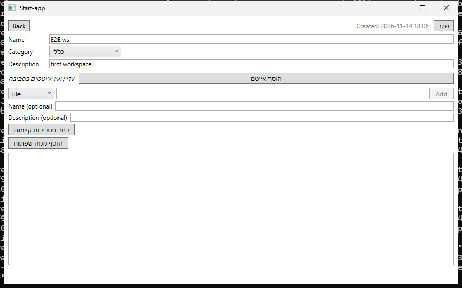

מדריך למשתמש
מדריך Start-app
צעד אחר צעד: יצירת סביבת עבודה, הוספת פריטים, לכידה, שיגור ושמירה - עם צילומי מסך אמיתיים של האפליקציה ועם המגבלות שחשוב להכיר.
אב-טיפוס להערכה, לא גרסה יציבה
גרסת המדריך: 0.1.0-proto.1
לא נמצאו פרקים. נסו מילה אחרת או נקו את החיפוש.
מה זה Start-app
Start-app שומרת תוכנות, תיקיות, קבצים וקישורים תחת שם סביבה אחד. בפעם הבאה שפותחים את המחשב, פקודת "שגר" פותחת את כל הפריטים יחד, בלי לבחור כל אחד מחדש.
המדריך הזה מלווה את כל המסלול: המסך הראשי, יצירת סביבה, הוספת אייטמים ידנית או מלכידה, עריכה, שיגור ושמירה. פרק מגבלות ידועות מרכז במקום אחד את כל מה שהאפליקציה לא עושה.
דרישות מערכת והתקנה
יעד האריזה הוא Windows x64. אין גרסת Mac או Linux מאומתת.
ההורדה של הגרסה שמתאר המדריך הזה, 0.1.0-proto.1, נמצאת ברשימת הגרסאות בדף הבית. ההורדה מתבצעת רק שם, לא מדף המדריך.
הפעלה אחרי ההורדה
ההורדה היא קובץ ZIP, לא מתקין. אחרי ההורדה:
- חלצו את כל הקבצים מה־ZIP לתיקייה.
-
פתחו את התיקייה שחולצה והפעילו את
StartApp.App.exe. - השאירו את קובצי ה־DLL וה־runtime בתיקייה, לצד הקובץ.
האפליקציה כוללת את סביבת ההרצה שלה, ולכן אין צורך בהתקנת .NET
בנפרד. אין הרשמה, חשבון או התחברות. הנתונים נשמרים בקובץ מקומי
ב־%LOCALAPPDATA%\StartApp\store.json.
מה נבדק: אב-טיפוס זה נבנה כאפליקציית Windows x64 עצמאית, והופעל ונסגר בהצלחה בשרת Windows Server 2025 מתארח. לא נבדק באופן עצמאי ב־Windows 11 ביתי, ואין התחייבות לגרסת Windows מינימלית. אין התחייבות שלא יופיעו אזהרות אבטחה או התראות של תוכנת אנטי-וירוס.
המסך הראשי: תצוגת הסביבות
בראש המסך נמצאת רשימת הסביבות. בכל כרטיס סביבה רואים שם, תיאור, קטגוריה, צבע ותמונת כרטיס שבחרתם, זמן יצירה ופתיחה אחרונה. חותמת הפתיחה האחרונה מתעדכנת בשיגור סביבה, לא בפתיחת אייטם בודד.
לכל כרטיס כפתור "שגר" ותפריט "..." עם פעולות נוספות. מתחת לרשימה נמצא טופס יצירת סביבה חדשה, ובפינה כניסה למסך הלכידה.

יצירת סביבת עבודה חדשה
בטופס היצירה שם הוא שדה חובה. קטגוריית ברירת המחדל היא "כללי", ואפשר לבחור צבע ותמונת כרטיס. התיאור הוא שדה רשות. אחרי השמירה מופיע אישור שהפרטים נשמרו.

אם מנסים לשגר סביבה שעדיין אין בה אייטמים, מופיעה הודעה שמפנה לפרטי הסביבה כדי להוסיף אייטמים.

הוספת אייטמים ידנית
במסך פרטי הסביבה מוסיפים אייטמים מארבעה סוגים: אתר, קובץ, תיקייה ותוכנה. לכל אייטם אפשר לתת שם ותיאור משלכם. לנתיבים מקומיים נדרש נתיב Windows מלא, לא כינוי תוכנה קצר.

האייטמים מקובצים במסך לפי סוג: אתרים, תיקיות, קבצים ותוכנות. לכל שורה כפתור עריכה ותפריט פעולות.

לכידה: סריקה, בחירה וכפילויות
הלכידה סורקת מה שפתוח עכשיו: תוכנות וחלונות סייר קבצים, ובדפדפן את שורת הכתובת. מקור הדפדפן מכיר Chrome, Edge ו-Brave; אין כרגע מטריצת תאימות מלאה לכל דפדפן וגרסה. הסריקה עשויה להימשך עד כ-10 שניות.
התוצאות מוצגות לבחירה לפני שמירה. אפשר ליצור מהן סביבה חדשה או להוסיף אותן לסביבה קיימת - עם חיפוש שמאתר אותה.

ביצירת סביבה חדשה הפריטים מסומנים כברירת מחדל. בהוספה לסביבה קיימת: בלי סימונים הפעולה היא "הוסף הכל", ועם סימונים - "הוסף נבחרים". כפילויות מול מה שכבר שמור בסביבה דורשות אישור. תוספות במסך צד-לצד נשארות זמניות עד שלוחצים שמור.

אתר שנלכד שומר גם את הדפדפן שממנו הוא נמצא, כשאפשר לזהות אותו.

עריכת סביבה ואייטמים
תפריט "..." של כרטיס סביבה מציע: הצג, שגר, הוסף אייטם, עצב כרטיס וערוך קטגוריה.

בעיצוב כרטיס בוחרים צבע ותמונת רקע. בכל אייטם אפשר לערוך שם, תיאור וכתובת, להעתיק כתובת, להזיז ברשימה או להסיר מהסביבה הנוכחית. "פתח באמצעות" נשמר לאייטם בתוך Start-app בלבד, בלי לשנות שיוכי ברירת מחדל ב-Windows.

יציאה מעריכה עם שינויים שלא נשמרו פותחת אזהרה: שמור וצא, צא בלי לשמור, או חזרה לעריכה.

שיגור סביבה ובדיקות לפני פתיחה
הפקודה "שגר" בודקת את הפריטים לפני הפתיחה ומפרידה בין פריטים שמוכנים, חסרים, לא נתמכים, לא זמינים או מצריכים החלטה. פריטים שמצריכים החלטה לא מקבלים מעקף כללי. קישורים נפתחים ב-http/https בלבד, ולתוכנות נדרש נתיב מלא.

אחרי אישור, האפליקציה שולחת ל-Windows בקשה לפתוח כל פריט. חשוב להבין מה זה אומר: בקשה שנשלחה אינה הוכחה שהחלון הרצוי באמת נפתח. האפליקציה גם לא יכולה לדעת באופן אמין אם הפריט המדויק כבר פתוח, ולכן פתיחה חוזרת עלולה ליצור כפילות. פריט שהקובץ שלו לא נמצא נכשל בהודעת "הקובץ לא נמצא".
מגבלות ידועות
- אין זיהוי אוטומטי של המסמך שפתוח בתוך תוכנה; תוכנה פתוחה אינה ראיה לקובץ מסוים שפתוח בה. מסמכים מוסיפים ידנית.
- אין הבטחה לשחזור תוכן שלא נשמר או למיקום חלונות.
- "כבר פתוח" אינו ידוע באופן אמין; פתיחה חוזרת עלולה ליצור כפילות.
- הלכידה עשויה לעבור בגלוי בין לשוניות כדי לקרוא כתובות.
- תוצאת לכידה חלקית או רשימה ריקה אינן אומרות שאין שום דבר פתוח.
- אין פעולת מחיקת סביבה בממשק; אפשר להסיר אייטמים מסביבה, לא למחוק סביבה שלמה.
- "שיתוף לסביבה אחרת" עשוי להופיע אך אינו פעיל.
שמירה ואחסון מקומי
במבנה הפרויקט הנוכחי, סביבות העבודה נשמרות בקובץ מקומי במחשב:
%LOCALAPPDATA%\StartApp\store.json. שינויים נשמרים
רק כשלוחצים שמור במפורש.
פרטיות בקצרה
במבנה הנוכחי, הנתונים של הסביבות נשמרים מקומית במחשב. פתיחת קישור או תוכנה יוצרת את התקשורת הרגילה של אותו יעד - למשל, פתיחת אתר בדפדפן פונה לאותו אתר.
האתר הזה עצמו אינו כולל טפסים, אנליטיקה, גופנים מרוחקים או שירותי צד שלישי.
שאלות נפוצות
מה Start-app עושה?
שומרת תוכנות, תיקיות, קבצים וקישורים תחת שם סביבה אחד, ופותחת את כולם יחד בפקודת "שגר".
האם כל מה שפתוח יחזור בדיוק כמו שהיה?
לא מובטח. אין לכידה אוטומטית של מסמכים שפתוחים בתוך תוכנות, שחזור תוכן שלא נשמר או הבטחה למיקום חלונות. פתיחה היא בקשה למערכת ההפעלה, עם בדיקות מקדימות ודיווח.
איך מוסיפים מסמך שפתוח בתוך תוכנה?
ידנית: מוסיפים את הקובץ עצמו כאייטם מסוג קובץ בפרטי הסביבה. הלכידה לא מזהה אותו לבד מתוך התוכנה הפתוחה.
איפה נשמר המידע?
בקובץ מקומי במחשב. פירוט בפרק שמירה ואחסון מקומי.